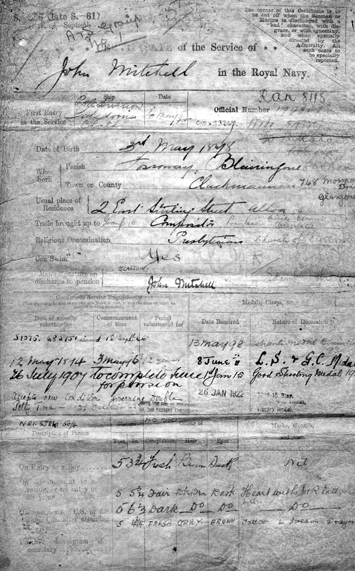
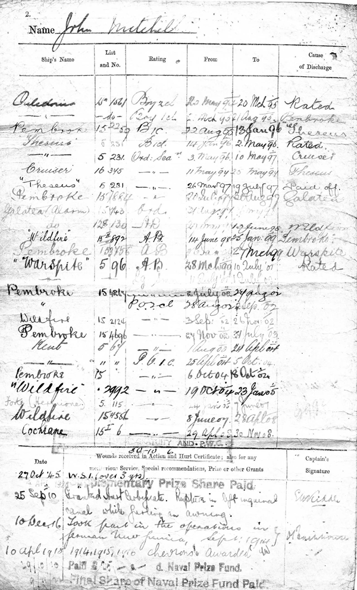

John was born 3rd May 1878 in Blairingone, Clackmannanshire,Scotland. He joined the Royal Navy as a 16 years old Boy Seaman 2nd Class.
John served two terms in HMS Theseus, first as a Boy Seaman 1st Class, then Ordinary Seaman. He rose to the rank of Chief Petty Officer, and turned down the opportunity of a Commission. Particularly skilled at gunnery, he eventually became a Gunnery Instructor.
He was pensioned off in 1919, but volunteered again in October 1942 and served until 1946 mainly as Gunnery Instructor at Chatham Barracks. So John actually served in two World Wars.
Detail submitted by John's granddaughter Janet Fraser.

